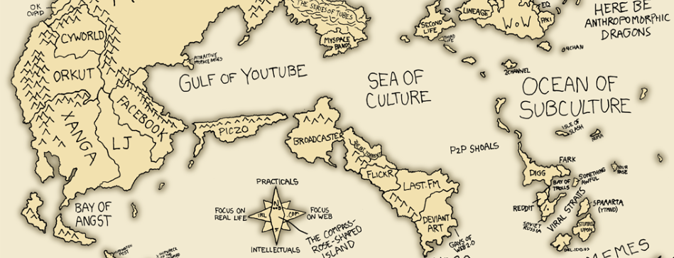

<mat-card class="my-card">
<div class="mat-title">Overview</div>
<p style="padding: 10px"> Mapcraft makes it easy for users to select and edit an image of their choice
to share it with others by sending the url that is generated when editing an
image. It uses the OpenLayers API to convert the chosen image to be able to use
the mapping functions of the API for further editing.
<br><br>
<div class="mat-title">Quick start</div>
<div class="row">
    <div class="column1">
        <button mat-raised-button color="primary" routerLink= "/register">Register now</button>
        <p>To use MapCraft, you will have to be logged in. Create an account
            now by clicking the link above.</p>
    </div>
    <div class="column1">
        <button mat-raised-button color="primary" routerLink= "/map-builder">Create a new map</button>
        <p>Once logged in, you can select and upload an image to start editing!</p>
    </div>
    <div class="column1">
        <button mat-raised-button color="primary" routerLink= "/map-viewer">View someone else's map</button>
        <p>Viewing someone's map is as easy as pasting the map url created
            by the original editor.</p>
    </div>
</div>
<br>
<div class="mat-title">Features</div>
<div class="row">
<div class="column2">
    <p><mat-icon class="inline" color="accent">add_circle</mat-icon> Own map</p>
    <p>Start editing your own map by simply uploading an image through a
        drag-and-drop after clicking "create a map".</p>
</div>
<div class="column2">
    <p><mat-icon class="inline" color="accent">share</mat-icon> Share</p>
    <p>Show your finished map to others by simply sending them the generated 
        url of the map.</p>
</div>
</div>

<div class="row">
    <div class="column2">
        <p><mat-icon class="inline" color="accent">where_to_vote</mat-icon> Markers with information</p>
        <p>Be able to place markers with information onto any selected location.</p>
    </div>
    <div class="column2">
        <p><mat-icon class="inline" color="accent">directions</mat-icon> Routing</p>
        <p>Find the fastest route between two selected locations.</p>
    </div>
        

    </div>

</mat-card>